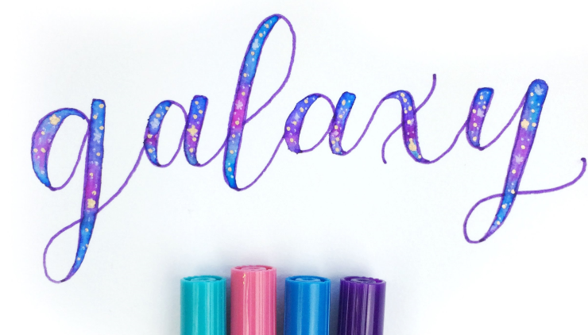
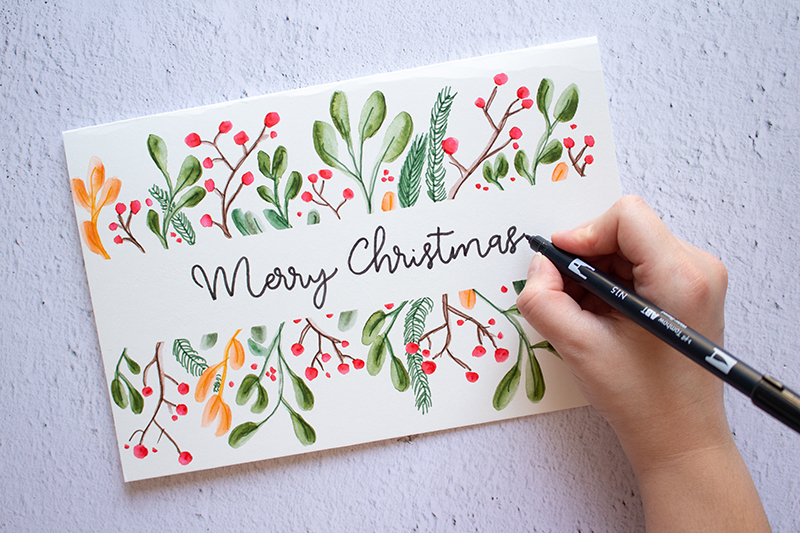

Here are two of the most beginner-friendly types of modern calligraphy – fauxligraphy and brush pen calligraphy.
Fauxligraphy
Faux calligraphy, known as fauxligraphy, is a form of calligraphy whereby monoline pens are used to imitate the thick and thin strokes of calligraphy. This makes fauxligraphy the most convenient form of calligraphy as virtually any type of pen, pencil or even marker can be used, with no specific type of paper needed.

Fauxligraphy involves two simple steps:
Step 1: Write the letters. This is generally done in cursive to imitate calligraphy. However, it also looks good with normal handwriting!
Step 2: Thicken the downstrokes.
You may also visit the website below for a crash course on fauxligraphy.
After mastering the basics, you may even wish to explore different styles of fauxligraphy. Here is a video to get your creative juices flowing!
Brush Pen Calligraphy
Brush pen calligraphy is slightly more technical than fauxligraphy, needing more specific materials such as brush pens and smooth paper. Brush pens are markers with flexible felt tips. These tips differ in size and flexibility, and it is important to find one that best suits your needs. Though difficult to master, brush pen lettering appears sophisticated and can be used for a variety of projects ranging from cards to place cards for functions.

You may wish to refer to the following website for a very detailed guide to get started on brush pen lettering:
Other Types of Calligraphy
There are other types of modern calligraphy not covered here, such as watercolour calligraphy and dip pen calligraphy. There are many tutorials on the internet, so do explore them!